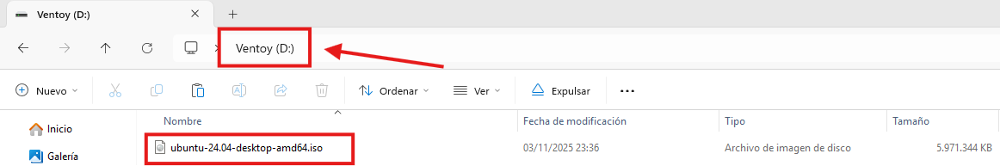

Introducción
En esta web, el procedimiento se realizará utilizando un equipo portátil real, antiguo.
De esta
manera, si existiera algún problema en la instalación, no se ponen en riesgo los datos del usuario.
Paso 1: Preparar el disco
Abrir la administración de discos de Windows y crear una partición libre para Ubuntu. La haré de 50GB.

Paso 2: Crear USB de arranque con VENTOY
En otro equipo, descargamos y utilizamos Ventoy para crear un USB de arranque y copiar la ISO de
Ubuntu.
Para descargar Ventoy y la ISO oficial de Ubuntu, los enlaces estarán en la página de
recursos.

Una vez abierto Ventoy, introducimos una memoria USB vacía, con más de 8GB de capacidad y le damos click en INSTALL.
Ya tenemos la memoria USB lista para ser arrancable y con la ISO de Ubuntu 24.
Paso 3: Iniciar a través de la memoria USB
En este caso, en Hp, la tecla para abrir el Boot Menu será F9. Elegiremos la opción de iniciar mediante el USB con Ventoy.


Presionamos intro y después seleccionamos la opción "boot in normal mode".

Inicia el GRUB de ubuntu, seleccionamos la opción 1.
Paso 4: Instalación de Ubuntu
Seleccionamos idioma, teclado y configuraciones al gusto, hasta llegar al apartado de Configuración de
disco.
Donde seleccionaremos Instalar Ubuntu junto a Windows.
Siguiente.


Creamos nuestro usuario local de ubuntu. Luego pedirá elegir huso horario y al final, clicamos en instalar.
Al finalizar, daremos click a reiniciar ahora y retiramos el USB.
Paso 5: Comprobamos la instalación
Debemos asegurarnos que en el orden de inicio, la opción "Ubuntu" sea la primera o esté por defecto.
Probamos a encender el equipo y arrancará el grub, donde elegimos el SO que queremos arrancar y listo.

Podremos ahora elegir cada vez que encendamos el equipo, si queremos ejecutar windows 11 o
ubuntu.
Ubuntu queda instalado en la partición sin formato que creamos al principio.